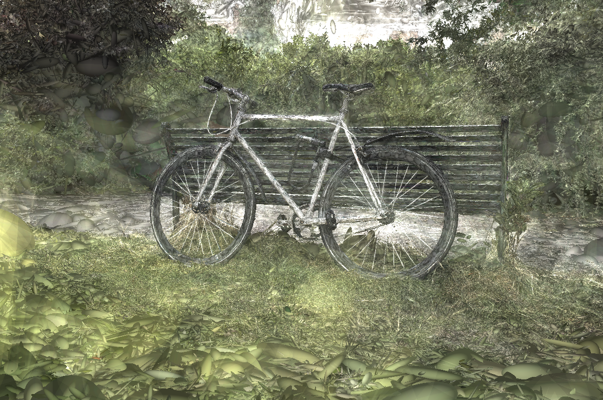

3D Gaussian Splatting (3DGS) is an explicit pointbased novel view synthesis technique that achieves high visual quality and fast training times. However, 3DGS suffers from high memory and storage usage limiting its applicability across various device form factors. In this context, we introduce a novel and efficient 3DGS coarse-tofine optimization strategy. Our method reduces the memory overhead of 3DGS by initiating the training process with significant over-reconstruction, which serves as an effective regularizer, and progressively refines the scene representation. Our approach also produces stand-alone scene representations at each level-of-detail in the progressive refining process, enabling variable storage, transmission, and rendering based on the downstream requirements.
We employ a progressive frequency control strategy with five distinct image and scene quality levels In and Gn respectively in range n = (1 − 5). We start by applying the blur with a large kernel size to the training images, reducing their detail and noise. This initial reduction in detail allows the model to focus on learning the broader, more significant structures of the scene. As the training progresses, the level of blur is gradually reduced by reducing the size of the blur filter which reintroduces higher frequency details in a controlled manner.